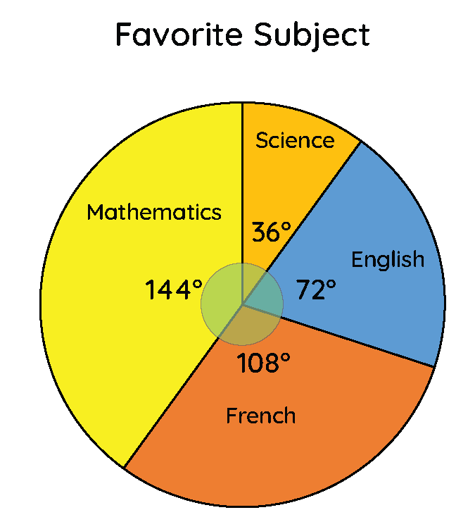

Basic 7
Lesson 1:
Tallies
Lesson 2:
Frequency Tables
Lesson 3:
Pie Chart
Lesson 4:
Double Bar Graphs
Pie Chart
When data has been recorded and organised into a frequency table, we need to present it in a certain way in order to draw conclusions.
One of the ways to represent data is the BAR CHART that we read on in the previous lesson.
Another way of representing data is through the use of a pie chart.
What is a Pie Chart
A pie chart is a circular chart divided into sectors. Each sector represents a part or proportion of the total data given.
A pie chart can also be said as a type of graph that presents data in a circular form, with each slice of the circle (the sector) representing a fraction or proportion part of the whole.
Below is an example of a pie chart representing student's favourite subjects in Good Shepherd International School.

Uses of the Pie Chart
The sectors in the circle are how we visually represent parts or categories of a whole data using a pie chart. This makes comparison between the various categories in data easy, and helps in decision making.
Pie charts are used in various places in real life.
- They are used in business to represent a distribution of monthly budgets, yearly budgets, etc.
- They are used to display results of preferences in a survey.
- One can also use pie charts to represent the time spent on their daily activities.
- You can also use pie charts to represent how much of your total money you spend on the things you buy at school.